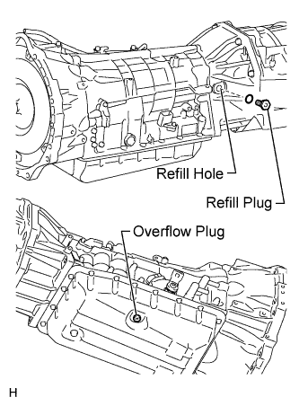
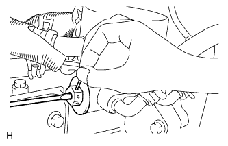
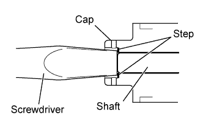
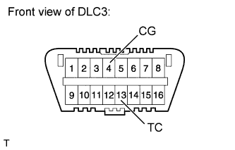
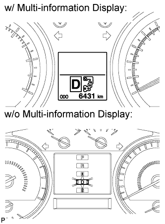
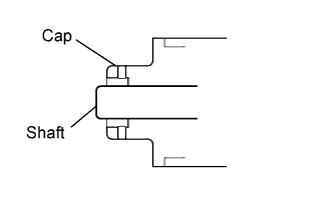

AUTOMATIC TRANSMISSION FLUID > ADJUSTMENT |
| 1. BEFORE FILLING TRANSMISSION |
 |
| 2. TRANSMISSION PAN FILL |
 |
Remove the refill plug and overflow plug.
Fill the transmission through the refill hole until fluid begins to trickle out of the overflow tube.
Reinstall the overflow plug.
| 3. TRANSMISSION FILL |
 |
w/o Air Cooled Transmission Oil Cooler (w/ ATF Warmer):
Push the shaft of the thermostat and fix it in place.
By using compressed air, etc., blow dust off of the thermostat cap to clean it.
 |
Using a screwdriver, push the shaft of the thermostat.
With the shaft of the thermostat pressed, push a pin (diameter: 1.0 to 1.8 mm (0.0394 to 0.0709 in.)) into a hole on the side of the thermostat cap. Insert the pin until it passes through the hole on the other side of the thermostat cap to fix the shaft in place.
Fill the transmission with the amount of fluid listed in the table below.
| Repair | Fill Amount |
| Transmission pan and drain plug removal | 1.7 liters (1.8 US qts, 1.5 Imp. qts) |
| Transmission valve body removal | 4.3 liters (4.5 US qts, 3.8 Imp. qts) |
| Torque converter removal | 5.4 liters (5.7 US qts, 4.8 Imp. qts) |
Reinstall the refill plug to prevent the fluid from splashing.
Install the refill plug.
Allow the engine to idle with the air conditioning off.
Move the shift lever through the entire gear range to circulate fluid.
Wait for 30 seconds with the engine idling.
Stop the engine.
Remove the refill plug and add fluid.
Reinstall the refill plug.
| 4. ADJUST FLUID TEMPERATURE |
When using the intelligent tester:
Turn the engine switch off.
Connect the intelligent tester to the DLC3.
Turn the engine switch on (IG).
for 1GR-FE:
Enter the following menus: Powertrain / Engine and ECT / Active Test / Connect the TC and TE1.
for 2UZ-FE:
Enter the following menus: Powertrain / ECT / Active Test / Connect the TC and TE1.
Enter the following menus: Powertrain / ECT / Data List / A/T Oil Temperature 1.
Check the ATF temperature.
According to the display on the intelligent tester, perform the Active Test "Connect the TC and TE1".
Start the engine.
 |
When not using the intelligent tester:
Using SST, connect terminals 13 (TC) and 4 (CG) of the DLC3.
Start the engine.
Slowly move the shift lever from P to S, then change the gears from 1st to 6th. Then return the shift lever to P.
 |
Move the shift lever to D, and quickly move back and forth between N and D (once within 1.5 seconds) for at least 6 seconds. This will activate the fluid temperature detection mode.
When using the intelligent tester:
Return the shift lever to P and press OFF on the Active Test display.
When not using the intelligent tester:
Return the shift lever to P and disconnect terminals 13 (TC) and 4 (CG).
Allow the engine to idle until the fluid temperature reaches 38 to 45°C (100 to 113°F).
The indicator (D) will come on again when the fluid temperature reaches 38°C (100°F) and will blink when it exceeds 46°C (113°F).
| Below Proper Temperature | Proper Temperature | Higher than Proper Temperature |
| Data List [A/T Oil Temperature 1] 38°C (100°F) or less | Data List [A/T Oil Temperature 1] 38 to 45°C (100 to 113°F) | Data List [A/T Oil Temperature 1] 45°C (113°F) or higher |
| Indicator light (D) Turn off | Indicator light (D) Turn on | Indicator light (D) Blinking |
| 5. FLUID LEVEL CHECK |
|
Remove the overflow plug with the engine idling.
Check that fluid comes out of the overflow tube.
If fluid does not come out, proceed to the "Transmission Refill" procedures.
If fluid comes out, wait until the overflow slows to a trickle and proceed to the "Complete" procedures.
| 6. TRANSMISSION REFILL |
Remove the overflow plug.
Remove the refill plug.
Add ATF into the refill hole until ATF flows from the overflow tube.
Wait until the overflow slows to a trickle and proceed to the ''COMPLETE'' procedures.
| 7. COMPLETE |
Install a new gasket and the overflow plug.
Stop the engine.
Install a new gasket and the refill plug.
 |
w/o Air Cooled Transmission Oil Cooler (w/ ATF Warmer):
Remove the pin.